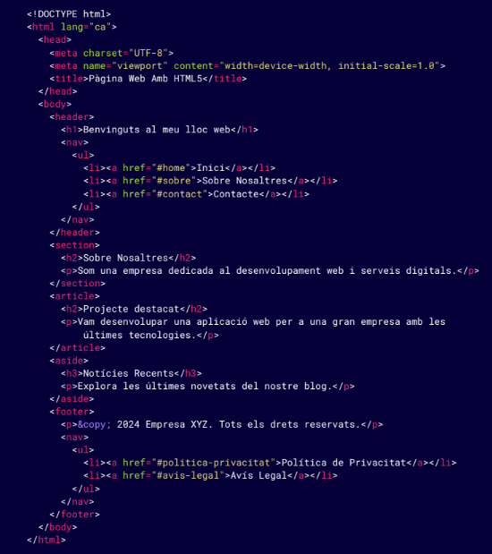
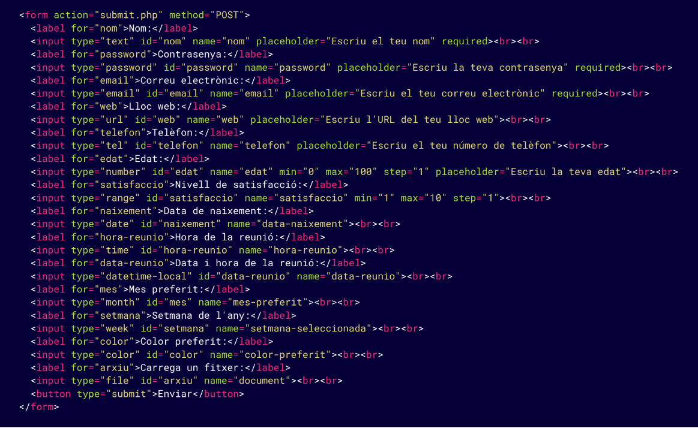

HTML 5 Y SU EVOLUCIÓN
Es una evolución importante respecto a las versiones anteriores de HTML, introduciendo nuevas etiquetas y
funcionalidades que permiten una mejor gestión del contenido multimedia, formularios avanzados, y
mejoras
en la semántica de la página web.
| Etiquetas en HTML 5 |
- <section>: Uso para agrupar contenido relacionado en una página.
|
- <article>: Representa un blog de contenido autónomo, como un
artículo de
un blog, una noticia o un post que puede existir independientemente del sitio web.
|
- <aside>: Define contenido relacionado con el contenido principal, pero
no
esencial. Normalmente se utiliza para barras laterales, anuncios, o información
complementaria.
|
- <header> y <footer>: Etiquetas para definir las cabeceras y pies
de
página.
|
- <nav>: Específica para las barras de navegación del sitio web.
|
- <figure> y <figcaption>: Agrupa elementos multimedia (como de
imágenes o
vídeos) y sus descripciones.
|

FORMULARIOS EN HTML
- Los formularios son una de las herramientas más importantes de HTML porque permiten a los usuarios
enviar datos a un servidor.
Con HTML5, los formularios han ganado nuevas funcionalidades que mejoran su usabilidad y validación.
- Un formulario se crea con la etiqueta <form>, que actúa como el contenedor de todos los
elementos de entrada (texto, botones,
selecciones, etc.).
- Cada campo del formulario se envía como datos a un servidor cuando el usuario lo envía.
| Atributos y etiquetas de Formularios HTML |
| <input> |
- La etiqueta <input> es el elemento más versátil para crear campos de
entrada. El
tipo de campo se define con el atributo type.
|
|
<label>
|
- La etiqueta <label> se utiliza para etiquetar campos de formulario y
mejorar
la accesibilidad.
|
|
<textarea>
|
- Para textos largos, como comentarios o descripciones, se utiliza
<textarea>,
que permite un área de texto mayor.
|
|
<select>
|
- <select> se utiliza para crear listas desplegables de selección. Cada
opción dentro de la lista se define con <option>.
|
|
Atributo múltiple
|
- Atributo múltiple por las listas desplegables de selección. Permite seleccionar
múltiples opciones en una lista de
selección.
|
|
<button>
|
- Se utiliza para crear botones de envío o otras acciones dentro del formulario.
|
Radio buttons
|
- Radio buttons permite seleccionar una opción de un conjunto de posibilidades.
|
|
Checkboxes
|
- Los checkboxes permiten seleccionar varias opciones independientes.
|
VALIDACIÓN DE FORMULARIOS
HTML5 introduce una serie de nuevos atributos y tipos de entrada para validar los formularios de
forma
nativa, sin la
necesidad de JavaScript.
- Atribut required: Marca un campo como obligatorio.
- Atribut pattern: permite definir un patrón con expresiones regulares para
validar
la entrada del usuario.
TIPOS DE ENTRADA ESPECIALES
Estos tipos permiten validar y mostrar los campos de formulario de forma más adecuada según el tipo
de
datos
que esperas obtener del usuario:
- <input type="password">
- <input type="email">
- <input type="url">
- <input type="table">
- <input type="number">
- <input type="range">
- <input type="date">
- <input type="time">
- <input type="datetime-local">
- <input type="month">
- <input type="week">
- <input type="color">
- <input type="file">

MULTIMEDIA CON HTML
HTML5 ha introducido formas nuevas y eficientes de integrar multimedia en las páginas web,
incluyendo
imágenes, vídeos, y
audio sin necesidad de plug-ins externos como Flash. Esto ha mejorado tanto la
compatibilidad
como
la usabilidad en
múltiples dispositivos, especialmente en móviles.
| ARCHIVOS MULTIMEDIA EN HTML |
| Imágenes en HTML |
Vídeos en HTML |
Audios en HTML |
- La etiqueta <img> se utiliza para insertar imágenes en una página
web.
Esta etiqueta es auto-cerrada (no tiene etiqueta de cierre).
- Atributos principales:
- src: Especifica la ruta de la imagen.
- alt: Proporciona un texto alternativo para la imagen, útil para la
accesibilidad
y SEO.
- width y height: Controlan las medidas de la imagen.
|
- HTML5 introduce la etiqueta <video> para insertar vídeos de forma
nativa en
la página web, sin necesidad de plug-ins externos.
- Atributos principale:
- src: Especifica la ruta del video.
- controls: Muestra los controles del video (play, pause, volum...).
- autoplay: Hace que el video se reproduzca automáticamente cuando se
carga
la
página.
- loop: Hace que el video se reproduzca en bucle.
- muted: Reproduce el video sin sonido.
|
- De forma similar a los vídeos, HTML5 permite insertar audio nativo con la
etiqueta
<audio>.
- Atributos principales:
- src: Especifica la ruta del audio.
- controls: Muestra los controles de reproducción del audio (play,
pause,
volume...).
- autoplay: Hace que el audio se reproduzca automáticamente cuando se
carga
la
página.
- loop: Hace que el audio se reproduzca en bucle.
- muted: Reproduce el audio sin sonido.
|
ETIQUETAS
| Etiquetas en HTML |
| <center> |
- La etiqueta <center> se utilizaba en versiones antiguas de HTML
para
centrar el contenido dentro de una página web, tanto texto
como imágenes u otros elementos.
- Está obsoleta en HTML5, y debería evitarse su uso. En lugar de
<center>, hoy en día se utiliza CSS para centrar los
elementos de forma más eficiente.
|
|
<div>
|
- La etiqueta <div> (abreviatura de "division") se utiliza para crear
contenedores de bloque en una página HTML. Es una
etiqueta de nivel de bloque, lo que significa que ocupa todo el ancho disponible
y
comienza en una línea nueva.
- No tiene significado semántico en sí misma; simplemente agrupa otros
elementos,
como texto, imágenes u otras etiquetas, y
suele ser estilizada con CSS.
- Es útil para organizar y diseñar distintas secciones de una página web.
|
|
<span>
|
- La etiqueta <span> es una etiqueta inline (online) que sirve
para
estilizar o manipular pequeñas porciones de texto o
contenido dentro de una página. A diferencia de <div>, no
ocupa
todo
el ancho disponible, sino que ocupa sólo el espacio
necesario.
- También es una etiqueta no semántica, usada principalmente para aplicar
estilos o
funcionalidad a un grupo específico
elementos dentro de un texto.
|
|
<hr>
|
- En HTML5, el uso de la etiqueta <hr> no es sólo decorativo. Tiene
un
valor
semántico para indicar un cambio de tema o una
ruptura en el flujo del documento, ayudando tanto a los motores de búsqueda como
a
las
herramientas de accesibilidad a entender mejor
la estructura del contenido.
|
|
<template>
|
- La etiqueta <template> se utiliza para definir fragmentos de
HTML
reutilizablesfragmentos de HTML reutilizables que no se muestran
inmediatamente
cuando la
página se carga. El contenido dentro de un <template> no se añade
al
documento hasta que se manipula explícitamente con
JavaScript, lo que permite crear plantillas que se pueden clonar e
insertar
en el
DOM de forma dinámica.
- Este elemento es ideal cuando quieres tener estructuras HTML preparadas
que
podrás añadir al documento en tiempo real,
sin que éstas sean rendidas o visibles inicialmente. Esto proporciona mucha
flexibilidad
para aplicaciones
dinámicas.
|
| <iframes>
|
- <iframes> (inline frame) es una etiqueta HTML que permite insertar
una
página HTML dentro de otra página web. Es una forma más moderna y segura
incrustar contenido externo, como otras páginas web, vídeos, formularios o
mapas,
dentro
de una página principal.
- Los iframes se utilizan a menudo para contenidos dinámicos como vídeos
de
YouTube, Google Maps, o integraciones de servicios externos.
- Etiqueta <iframes> se define dentro del cuerpo del documento y
puede
personalizarse con atributos como width, height, src, y frameborder.
|
METADATOS EN HTML
Los metadatos son información que se coloca dentro del documento HTML para describir
características del documento como el autor, la
descripción, las palabras clave o las instrucciones para motores de búsqueda y navegadores.
Los metadatos se incluyen dentro de la etiqueta <head> del documento HTML, pero no se
muestran directamente en la página web. Estos datos
ayudan a los navegadores, motores de búsqueda, y aplicaciones a comprender mejor el contenido
de
la página.
- Charset (Conjunto de carácteres)
- Establece el conjunto de caracteres utilizado en el documento, como UTF-8, que
soporta
casi todos los caracteres.
- Viewport (Responsive Design)
- Ayuda a configurar la visualización de una página web en dispositivos móviles, garantizando
que
el contenido se adapte correctamente a diferentes
tamaños de pantalla.
- Descripción de la página
- Proporciona una breve descripción del contenido de la página. Esta información es
utilizada por los motores de búsqueda para mostrar
descripciones en los resultados de búsqueda.
- Palabras clave (Keywords)
- Define un conjunto de palabras clave que describen el contenido de la página. Aunque
no
es tan utilizado por los motores de búsqueda
actualmente, puede ser útil para otras aplicaciones.
- Autor de la página
- Indica el nombre del autor o empresa responsable del contenido de la página Web.
- Instrucciones para Robots de Búsqueda
- Indica a los motores de búsqueda cómo indexar y rastrear el contenido de la página.
- Open Graph Tags (para redes sociales)
- Los Open Graph Tags son metadatos utilizados por las redes sociales (como Facebook o
Twitter) para mostrar previsualizaciones
personalizadas cuando se comparte un enlace.
- Metadatos de aplicaciones móviles
- Puedes utilizar metadatos para mejorar cómo se ve la página cuando se guarda en la pantalla
de
inicio en un dispositivo móvil.
- Favicon
- Aunque no es un <meta>, el favicon es un metadato visual importante que se
muestra
en la pestaña del navegador.
- lang (atribut)
- El atributo lang se define dentro de la etiqueta <html> para especificar
el
idioma general de la página, o dentro de cualquier otra etiqueta HTML
para marcar un idioma específico dentro de una parte del contenido.